Testbericht 13 – Korrekturen Geometrie
1 Überblick
Die Alltagsmodelle fanden einen Absturz, vier still falsche Ergebnisse und eine Reihe von Kernelfehlern. Jedes Minimalbeispiel in tests/alltag/fehler/ trägt jetzt im Kopf seinen Soll-Zustand (// SOLL: fehlerfrei, SOLL-VOLUMEN, SOLL-FEHLER: Text – wo es kein richtiges Ergebnis gibt, ist eine klare Meldung das Ziel); tests/alltag/check.sh --fehler meldet je Beispiel „behoben“ oder „offen“. Die Tabelle zeigt beide Stände (vorher: Stand vor den Korrekturen, Commit cba3ab4; nachher: dieser Commit), cad measure --volume --json.
| Beispiel | Soll | vorher | nachher | check.sh |
|---|---|---|---|---|
f01_sweep_spline_profil | SOLL: fehlerfrei | V 0,0 mm³ 1 Fehler: sweep gescheitert: not supported by this kernel: sweep of a profile that is not centred on its origin along a curved path | V 2.179,6 mm³ keine Meldung | behoben |
f02_union_zylinder_sweep | SOLL: fehlerfrei | V 51.429,5 mm³ 1 Fehler: Vereinigung gescheitert: boolean union failed: SM_ERR_NULL_POINTER (1006) | V 51.429,5 mm³ 1 Fehler: Vereinigung gescheitert: boolean union failed: SM_ERR_NULL_POINTER (1006) | offen |
f03_sweep_polygon16 | SOLL: fehlerfrei | V 0,0 mm³ 1 Fehler: sweep gescheitert: sweep did not produce a closed solid (self-intersecting or open profile?) | V 0,0 mm³ 1 Fehler: sweep gescheitert: sweep: SMLib left 3 seam(s) between the side faces of the polygon profile open (SMLib limitation on curved paths; circle() or a spl | offen |
f04_union_fillet_sweep_polygon | SOLL: fehlerfrei | V 1.237,4 mm³ 1 Fehler: Verrundung gescheitert (1 mm): fillet failed: SM_ERR (1001) | V 1.237,4 mm³ 1 Fehler: Verrundung gescheitert (1 mm): fillet failed: SM_ERR (1001) | offen |
f05_fase_volumen_null | SOLL-FEHLER: not closed | V 0,0 mm³ keine Meldung | V 20.102,9 mm³ 1 Fehler: Fase gescheitert (0.8 mm): chamfer failed: SMLib returned a body that is not closed (faces missing): the blends of neighbouring edges collide, size to | behoben |
f06_fase_konkave_ecke | SOLL: fehlerfrei | V 26.174,0 mm³ 1 Fehler: Fase gescheitert (0.5 mm): chamfer failed: SM_ERR (1001) | V 26.174,0 mm³ 1 Fehler: Fase gescheitert (0.5 mm): chamfer failed: SM_ERR (1001) | offen |
f07_torus_zone | SOLL: keine Warnungen | V 12.566,4 mm³ Warnung: 0 Kanten | V 12.539,7 mm³ keine Meldung | behoben |
f08a_union_torus | SOLL-VOLUMEN: 5852.26 1 | V 6.049,7 mm³ keine Meldung | V 5.852,3 mm³ keine Meldung | behoben |
f08b_union_ring_verloren | SOLL-VOLUMEN: 5852.26 1 | V 5.654,9 mm³ keine Meldung | V 5.852,3 mm³ keine Meldung | behoben |
f08c_differenz_torus_tangential | SOLL-FEHLER: not a closed solid | V 0,0 mm³ keine Meldung | V 5.654,9 mm³ 1 Fehler: Differenz gescheitert: the result is not a closed solid: the operands touch tangentially or along an edge there (let them overlap a little or keep a g | behoben |
f09a_absturz_tangentialer_dom | SOLL-FEHLER: touch tangentially | Absturz (Exit 139), keine Ausgabe | V 1.584,8 mm³ 1 Fehler: Vereinigung gescheitert: the result is not a closed solid: the operands touch tangentially or along an edge there (let them overlap a little or keep a | behoben |
f09b_absturz_zapfen_sweep | SOLL-FEHLER: cannot blend the corner | Absturz (Exit 139), keine Ausgabe | V 1.067,1 mm³ 1 Fehler: Verrundung gescheitert (1 mm): fillet failed: SMLib cannot blend the corner where these edges meet (faces that touch tangentially there?) | behoben |
f10_union_fillet_schale_verloren | SOLL: fehlerfrei; SOLL-VOLUMEN-MIN: 20000 | V 0,0 mm³ keine Meldung | V 26.042,9 mm³ 1 Fehler: Verrundung gescheitert (1 mm): fillet failed: SMLib returned a body that is not closed (faces missing): the blends of neighbouring edges collide, size | offen |
f11_stift_deckungsgleich | SOLL: fehlerfrei | V 10.165,1 mm³ 1 Fehler: Vereinigung gescheitert: boolean union failed: SM_ERR_NULL_POINTER (1006) | V 10.165,1 mm³ 1 Fehler: Vereinigung gescheitert: boolean union failed: SM_ERR_NULL_POINTER (1006) | offen |
f12_shell_loft_quadrat_kreis | SOLL: fehlerfrei | V 515.686,3 mm³ 1 Fehler: shell gescheitert (2 mm): SmApiShellBrepFull failed: SM_ERR_NULL_POINTER (1006); kernel trace: SM_ERR_NULL_POINTER at SmMerge.cpp:672; shell from bool | V 515.686,3 mm³ 1 Fehler: shell gescheitert (2 mm): SmApiShellBrepFull failed: SM_ERR_NULL_POINTER (1006); kernel trace: SM_ERR_NULL_POINTER at SmMerge.cpp:672; shell from bool | offen |
f13_shell_verrundung | SOLL-FEHLER: radius of a convex rounding | V 59.848,6 mm³ 1 Fehler: shell gescheitert (2 mm): SmApiShellBrepFull failed: SM_ERR (1001); shell from booleans: SmApiOffsetBrepFull failed: SM_ERR (1001) | V 59.848,6 mm³ 1 Fehler: shell gescheitert (2 mm): shell: wall thickness 2.000000 is not smaller than the radius of a convex rounding of the body (about 2.000000): the inner s | behoben |
f15_knauf_kehle | SOLL: fehlerfrei | V 1.118,4 mm³ 1 Fehler: Verrundung gescheitert (1 mm): fillet failed: SM_ERR (1001) | V 1.118,5 mm³ 1 Fehler: Verrundung gescheitert (1 mm): fillet failed: SM_ERR (1001) | offen |
Nichts mehr still falsch: Von den Befunden mit falschem Ergebnis ohne Meldung (F5, F8a–c, F10) sind F8a/F8b richtig gerechnet, F5, F8c und F10 werden gemeldet (F5 und F8c haben kein richtiges Ergebnis: kollidierende Fasen, tangentiale Berührung). Kein Beispiel stürzt mehr ab.
2 Korrekturen in der Fassade und in SMLib
| Stelle | Änderung | Befunde |
|---|---|---|
smlib/patches/0002-fillet-missing-corner.patch | SmFilletExecutive::CreateFilletCorners: Eckpunkt ohne Ecktyp → Fehler statt Typverwechslung (Absturz) | F9 |
smlib/patches/0003-sweep-profile-reference-point.patch | SmSweepOptions::bUseProfileRefPoint/sProfileRefPoint: Bezugspunkt des Profils beim Kurven-Sweep vorgeben | F1 |
apply_matrix | Transform(m, FALSE): starre Bewegungen behalten die Toleranzen, Skalierung setzt sie aus der ganzen Hülle; Kontext unberührt | F7, F8a, F8b |
checked_boolean | nicht geschlossenes Ergebnis zweier geschlossener Körper oder unmögliches Volumen → Fehler statt „letzter Ausweg“; nur berührende Körper: a − b = a, a ∩ b = leer | F8c, F9a |
blend_core, do_fillet_like | Ergebnis einer Verrundung/Fase: geschlossen, Volumen plausibel; getrennte Kantenketten nacheinander; Meldung für fehlenden Ecktyp | F5, F10, F9b |
sc_sweep | Profilursprung als Bezugspunkt (0003); offene Seitennähte bei Polygonprofilen mit Ursache gemeldet | F1, F3 |
sc_shell | Meldung mit kleinstem konvexem Radius ≤ Wandstärke | F13 |
sc_mass_props | Volumen mit relativer Genauigkeit 1e-6 statt 1e-8 (Fehler ≤ 5e-6 gemessen) | Laufzeit |
Die Patches liegen unter smlib/patches/, smlib/fetch.sh wendet sie der Reihe nach an. Native Bibliotheken: smlib/build-native.sh; der Wasm-Kernel ist neu gebaut (smlib/build-wasm.sh) und besteht node crates/kernel-smlib/js/test-node.mjs.
3 Befunde im Einzelnen
F9 – Absturz bei union(fillet) mit tangentialem Kontakt
- Beispiele
tests/alltag/fehler/f09a_absturz_tangentialer_dom.scad,tests/alltag/fehler/f09b_absturz_zapfen_sweep.scad- Ursache
- In
SmFilletExecutive::CreateFilletCorners(SMLib) wird für jeden Eckpunkt der zu verrundenden Kanten ein Ecktyp gewählt. Gibt es keinen passenden (SmFilletCorner::Createliefert NULL, „Unimplemented corner case“), wurde der Eckpunkt mitcontinueübergangen – die Tabellem_vVertexCornerMapenthielt für ihn aber weiter die Liste seiner Kanten (SmTArray<SmEdgeuse>).GetFilletCornerOfVertexgab diese Liste später alsSmFilletCorner*zurück;CollectTangentEdgeSequencerief darauf virtuelle Methoden auf → Zugriff auf Adresse 0x2f08 (gdb mit Debug-Objekten, valgrind: „not stack'd, malloc'd or free'd“). Bei F9a ist ein Ecktyp der tangentialen Berührung Dom/Wand, bei F9b die fast tangentiale Kreiskante Zapfen/Sweep. - Korrektur
- smlib/patches/0002-fillet-missing-corner.patch: ohne Ecktyp wird der Eintrag entfernt und die Verrundung mit
SM_ERR_INVALID_INPUTbeendet, die Kante imSmFilletErrorInfovermerkt. Die Fassade übersetzt das in „SMLib cannot blend the corner where these edges meet (faces that touch tangentially there?)“ mit der Kante (rot inrender --line). Bei F9a meldet schon die Vereinigung den tangentialen Kontakt (siehe F8c): Dom und Wand berühren sich entlang einer Linie, ein mannigfaltiges Ergebnis gibt es nicht. Der Daemon-Rückfall war keine Lösung: der Absturz kommt aus dem Prozess selbst. - Nachweis
f09a_absturz_tangentialer_dom: vorher Absturz (Exit 139), keine Ausgabe → nachher V 1.584,8 mm³
1 Fehler: Vereinigung gescheitert: the result is not a closed solid: the operands touch tangentially or along an edge there (let them overlap a little or keep af09b_absturz_zapfen_sweep: vorher Absturz (Exit 139), keine Ausgabe → nachher V 1.067,1 mm³
1 Fehler: Verrundung gescheitert (1 mm): fillet failed: SMLib cannot blend the corner where these edges meet (faces that touch tangentially there?)
Tests:f09_examples_report_errors_instead_of_crashingok,f09_tangent_contact_under_union_fillet_fails_cleanlyok,fillet_at_a_nearly_tangent_circle_fails_without_crashok
F8 – Booleans mit Torus und rotate_extrude
- Beispiele
tests/alltag/fehler/f08a_union_torus.scad,tests/alltag/fehler/f08b_union_ring_verloren.scad,tests/alltag/fehler/f08c_differenz_torus_tangential.scad- Ursache
- Nicht der Torus selbst, sondern seine Transformation: Die Fassade rief
SmBrep::Transform(m, TRUE); mitTRUEleitet SMLib die Modellgröße aus der Hülle der Eckpunkte ab und setzt alle Toleranzen (Eckpunkte, Kanten, Flächen, außerdem die des globalen Kontexts) daraus. Ein Torus und der Rotationskörper eines Kreises haben genau einen Eckpunkt – Hülle 0, Toleranz 0. Mit Toleranz 0 verfehlt der Flächenschnitt jede Schnittkurve: Vereinigung = beide Körper nebeneinander (F8a, 6049,65 mm³ = Summe), Ring verloren (F8b), Schnittmenge leer. Nachgewiesen: derselbe Torus direkt bei z = 2 erzeugt schneidet richtig, verschoben (auch nur gedreht oder skaliert) nicht; die Geometrie (B-Rep-Strom) ist identisch, nur die Toleranzen 1e-5 → 0 unterscheiden sich. F7 (Torus als Zone wählt keine Kante) hat dieselbe Ursache. - Korrektur
apply_matrixtransformiert mitTransform(m, FALSE): starre Bewegungen lassen die Toleranzen unverändert; bei Skalierung setzt die Fassade sie aus der ganzen (losen) Hülle des Körpers, der Kontext bleibt unberührt. F8c: Der Torus berührt Deck- und Bodenfläche tangential entlang zweier Kreise; das Ergebnis ist nicht mannigfaltig (SMLib liefert es mit richtigem Volumen 5260,36 mm³, aber nicht geschlossen,measurezeigte 0). Die Prüfung der Booleans nimmt ein nicht geschlossenes Ergebnis zweier geschlossener Körper nicht mehr als „letzten Ausweg“ an, sondern meldet „the result is not a closed solid: the operands touch tangentially or along an edge there (let them overlap a little or keep a gap)“. Berühren sich die Körper nur (Innenräume überlappen nicht), gilt a − b = a und a ∩ b = leer statt eines nicht mannigfaltigen Körpers.- Nachweis
f08a_union_torus: vorher V 6.049,7 mm³
keine Meldung → nachher V 5.852,3 mm³
keine Meldungf08b_union_ring_verloren: vorher V 5.654,9 mm³
keine Meldung → nachher V 5.852,3 mm³
keine Meldungf08c_differenz_torus_tangential: vorher V 0,0 mm³
keine Meldung → nachher V 5.654,9 mm³
1 Fehler: Differenz gescheitert: the result is not a closed solid: the operands touch tangentially or along an edge there (let them overlap a little or keep a g
Tests:f07_translated_torus_selects_the_edge_on_its_core_circleok,f08_booleans_with_moved_tori_and_revolved_circlesok,moved_revolved_ring_unitesok,tangent_torus_in_a_slab_is_an_errorok,difference_of_bodies_touching_along_an_edge_keeps_the_firstok,moved_rotated_and_scaled_tori_intersectok
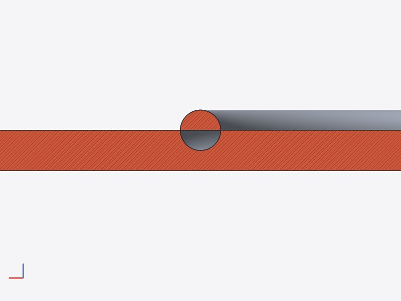
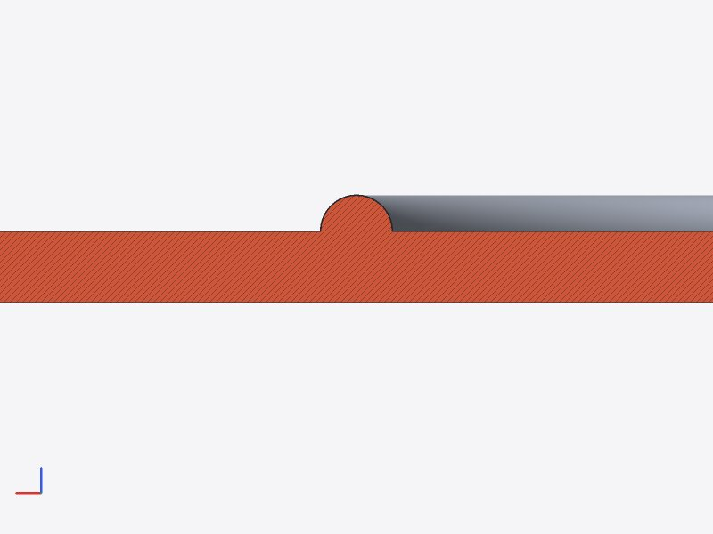
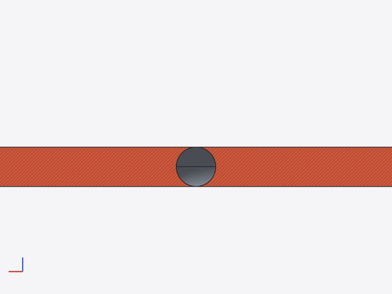
F5 – Fase über Zone am verrundeten Kasten: Volumen 0, Status ok
- Beispiele
tests/alltag/fehler/f05_fase_volumen_null.scad- Ursache
- SMLib liefert
SM_SUCCESSund eine offene Hülle: die Deckfläche fehlt. Grund ist die Geometrie: An den Ecken ist die Wand zwischen Außenradius 6 und der scharfen Innenecke nur 6 − 3√2 ≈ 1,76 mm dick; die Außenfase nimmt 0,8 mm, die Innenfase an der scharfen Ecke 0,8·√2 ≈ 1,13 mm – die Fasen überschneiden sich, die Deckfläche zerfällt. Nachgemessen:chamfer(0.7)geht,chamfer(0.75)nicht (Grenze rechnerisch 0,73). Fasen der äußeren und der inneren Kante je allein gehen. - Korrektur
- Die Fassade prüft jedes Ergebnis einer Verrundung/Fase (
blend_core): geschlossene Hülle, wenn der Eingang geschlossen war; Volumen > 0 und Volumenänderung höchstens so groß, wie eine Verrundung dieser Größe sie nahe den Kanten bewirken kann (20 r² je mm Kantenlänge + 10 r³ je Kante + 2 %). Verletzt → „SMLib returned a body that is not closed (faces missing): the blends of neighbouring edges collide, size too large for the wall between them?“ mit den Kanten. Zusätzlich: scheitert die Auswahl als Ganzes und zerfällt sie in getrennte Kantenketten (ohne gemeinsamen Eckpunkt), werden die Ketten nacheinander verrundet (Kanten im Zwischenkörper über ihre Geometrie wiedergefunden) – hier vergeblich, weil die Fasen wirklich kollidieren, aber hilfreich, wo SMLib nur an der Menge scheitert. - Nachweis
f05_fase_volumen_null: vorher V 0,0 mm³
keine Meldung → nachher V 20.102,9 mm³
1 Fehler: Fase gescheitert (0.8 mm): chamfer failed: SMLib returned a body that is not closed (faces missing): the blends of neighbouring edges collide, size to
Tests:f05_chamfer_that_leaves_an_open_shell_is_an_errorok,chamfer_result_must_be_closedok
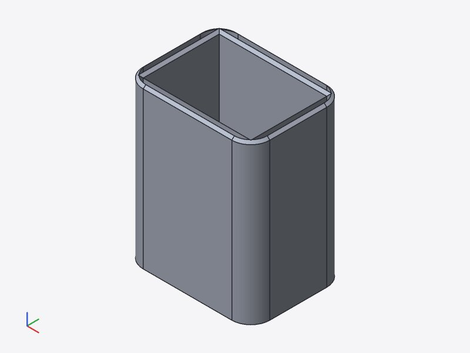
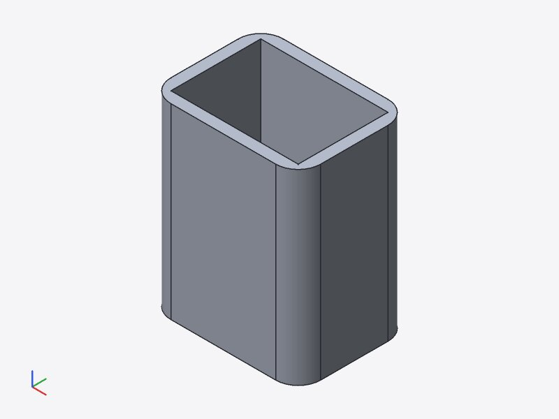
F10 – union(fillet) aus verrundeter Schale und Dom: nur der Dom
- Beispiele
tests/alltag/fehler/f10_union_fillet_schale_verloren.scad- Ursache
- Die Vereinigung selbst ist richtig (26 043 mm³). Die Kehle r 1 um den Dom (7,5 mm von der Innenecke) läuft auf die Bodenverrundung der Schale (Innenradius 1,5 zwischen x = 2 und 3,5); SMLib gibt dann einen offenen Körper aus Dom und Kehle zurück.
- Korrektur
- Die Plausibilitätsprüfung der Verrundung (F5) erkennt die offene Hülle: Fehler mit den Kanten, die Vereinigung ohne Kehle bleibt (statt Volumen 0 ohne Meldung). Eine richtig gerechnete Kehle über zwei Flächen bleibt offen (SMLib).
- Nachweis
f10_union_fillet_schale_verloren: vorher V 0,0 mm³
keine Meldung → nachher V 26.042,9 mm³
1 Fehler: Verrundung gescheitert (1 mm): fillet failed: SMLib returned a body that is not closed (faces missing): the blends of neighbouring edges collide, size
Tests:f10_union_fillet_that_loses_the_shell_is_an_errorok
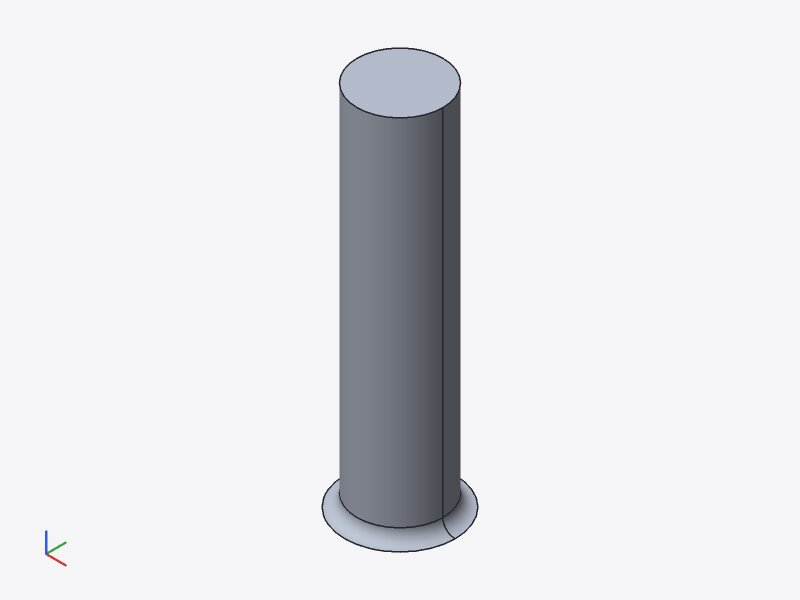
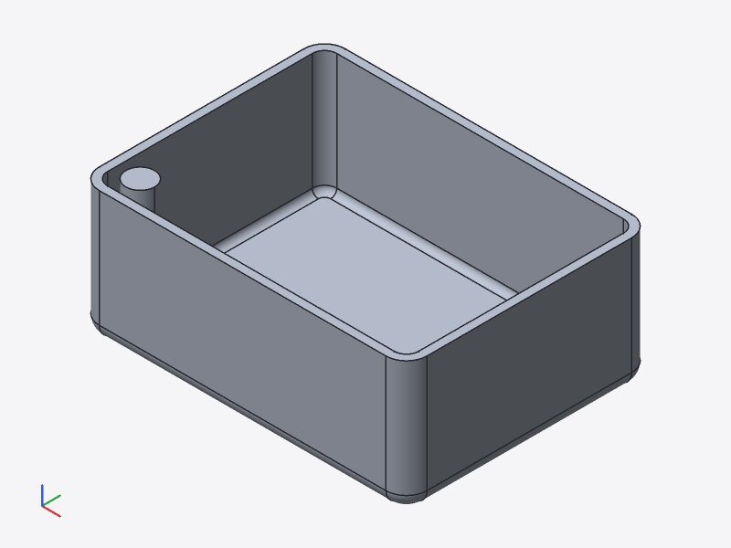
F1 – sweep mit symmetrischem Spline-Profil „not centred“
- Beispiele
tests/alltag/fehler/f01_sweep_spline_profil.scad- Ursache
- SMLib (
CreateCurveSweep,bMoveProfileCenterToPath) setzt den Mittelpunkt der Hülle der Profilkurven auf den Pfad.CalculateBoundingBoxeiner B-Spline-Kurve ist die Hülle ihrer Kontrollpunkte: für den geschlossenen Interpolationsspline durch (5,0) (0,3) (−5,0) (0,−3) x −15…5, obwohl die Kurve selbst symmetrisch ist (abgetastet ±5, ±3,08). Die Fassade lehnte jedes so „außermittige“ Profil auf gekrümmtem Pfad ab. - Korrektur
- smlib/patches/0003-sweep-profile-reference-point.patch:
SmSweepOptionserhältbUseProfileRefPoint/sProfileRefPoint; die Fassade gibt den Ursprung des Profilrahmens (Pfadanfang) vor. Damit folgen beliebige, auch bewusst außermittige Profile (Kreis bei (0, 4)) dem Pfad mit ihrem Ursprung; das Verschieben nach dem Sweep auf geraden Pfaden entfällt. Nur die Gehrungs-Variante für ebene Polylinien-Pfade hat die Option nicht (Meldung nennt den Ausweg Spline-Pfad). - Nachweis
f01_sweep_spline_profil: vorher V 0,0 mm³
1 Fehler: sweep gescheitert: not supported by this kernel: sweep of a profile that is not centred on its origin along a curved path → nachher V 2.179,6 mm³
keine Meldung
Tests:f01_symmetric_spline_profile_sweeps_along_a_curved_pathok,f01_off_centre_profile_follows_its_origin_on_a_curved_pathok,sweep_of_off_centre_and_spline_profiles_along_a_curveok
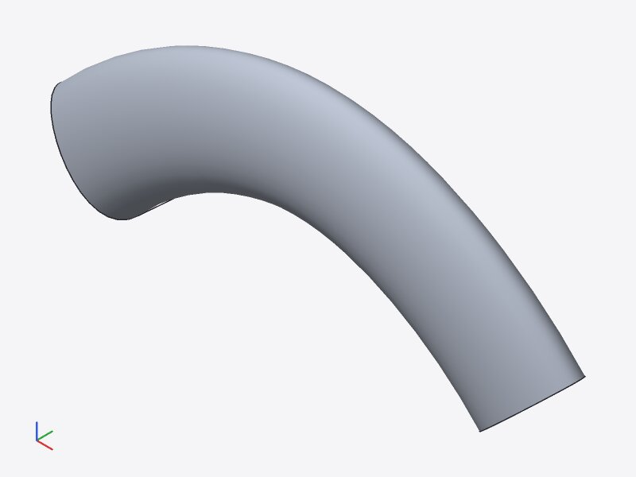
F2 – Zylinder ∪ gekrümmter Sweep: NULL_POINTER, doppelte Diagnose
- Beispiele
tests/alltag/fehler/f02_union_zylinder_sweep.scad- Ursache
- Der Sweep ist gültig (geschlossen, keine sich überlappenden Flächen) und vereinigt sich mit Quadern, auch wenn diese die Endkappe schneiden. Mit dem Zylinder (auch als NURBS, auch gedreht) scheitert SMLibs Flächenschnitt nahe der gekippten Endkappe (Kappe x 16,3…21,7 schneidet r = 20). Die Fassade versucht Reihenfolgen und Verschiebungen 1e-6…1e-4 – ohne Erfolg. Die doppelte Meldung kam aus der Engine: die gescheiterte Vereinigung gibt ihre Operanden zurück, die Wurzel vereinigt sie erneut und scheitert ein zweites Mal.
- Korrektur
- Engine: Teile aus einer gescheiterten Boolean-Operation tragen eine Markierung (
NodeOutput::unmerged); scheitert die Vereinigung im Elternknoten an ihnen erneut, wird das nicht noch einmal gemeldet. Der Kernel-Fehler selbst bleibt offen. - Nachweis
f02_union_zylinder_sweep: vorher V 51.429,5 mm³
1 Fehler: Vereinigung gescheitert: boolean union failed: SM_ERR_NULL_POINTER (1006) → nachher V 51.429,5 mm³
1 Fehler: Vereinigung gescheitert: boolean union failed: SM_ERR_NULL_POINTER (1006)
Tests:f02_failed_union_is_reported_onceok
F3, F4 – Sweep eines 16-Ecks „not a closed solid“; union(fillet) an 32-Eck-Sweep
- Beispiele
tests/alltag/fehler/f03_sweep_polygon16.scad,tests/alltag/fehler/f04_union_fillet_sweep_polygon.scad- Ursache
- SMLib baut je Polygonseite eine Seitenfläche; zwischen einigen Nachbarn bleiben Zwillingskanten mit Abstand 0 unverklebt (je 1 Fläche).
StitchFaces/SmApiStitchAdvancedmit Toleranz 1e-5…1e-3 kleben sie ebenfalls nicht (0 geklebt). Auf anderen Pfaden betrifft es 12- oder 32-Ecke. F4: die Verrundung der 32 Facettenkanten an der Kreiskante scheitert (SM_ERR). - Korrektur
- Meldung mit Ursache: „SMLib left 3 seam(s) between the side faces of the polygon profile open (SMLib limitation on curved paths; circle() or a spline() profile work)“. Eine Korrektur in SMLib (Aufbau der Seitenflächen im Sweep) bleibt offen.
- Nachweis
f03_sweep_polygon16: vorher V 0,0 mm³
1 Fehler: sweep gescheitert: sweep did not produce a closed solid (self-intersecting or open profile?) → nachher V 0,0 mm³
1 Fehler: sweep gescheitert: sweep: SMLib left 3 seam(s) between the side faces of the polygon profile open (SMLib limitation on curved paths; circle() or a splf04_union_fillet_sweep_polygon: vorher V 1.237,4 mm³
1 Fehler: Verrundung gescheitert (1 mm): fillet failed: SM_ERR (1001) → nachher V 1.237,4 mm³
1 Fehler: Verrundung gescheitert (1 mm): fillet failed: SM_ERR (1001)
Tests:f03_open_polygon_sweep_names_the_causeok
F13 – Meldung bei shell eines Körpers mit Verrundung ≤ Wandstärke
- Beispiele
tests/alltag/fehler/f13_shell_verrundung.scad- Ursache
- Die Innenfläche einer konvexen Verrundung mit Radius r < t entartet beim Versatz um t; SMLib meldet nur SM_ERR, der Ersatzweg über Booleans scheitert ebenso.
- Korrektur
- Scheitern beide Wege, bestimmt die Fassade den kleinsten konvexen Krümmungsradius der nicht geöffneten Flächen (Normalen-Differenzen auf einem 7×7-Raster je Fläche) und nennt ihn: „wall thickness 2 is not smaller than the radius of a convex rounding of the body (about 2): the inner surface degenerates there (rounding radius must be > wall thickness)“.
- Nachweis
f13_shell_verrundung: vorher V 59.848,6 mm³
1 Fehler: shell gescheitert (2 mm): SmApiShellBrepFull failed: SM_ERR (1001); shell from booleans: SmApiOffsetBrepFull failed: SM_ERR (1001) → nachher V 59.848,6 mm³
1 Fehler: shell gescheitert (2 mm): shell: wall thickness 2.000000 is not smaller than the radius of a convex rounding of the body (about 2.000000): the inner s
Tests:f13_shell_thicker_than_a_rounding_names_the_radiusok
F6, F11, F12, F15 – Kernel-Fehler mit Meldung, ohne Korrektur
- Beispiele
tests/alltag/fehler/f06_fase_konkave_ecke.scad,tests/alltag/fehler/f11_stift_deckungsgleich.scad,tests/alltag/fehler/f12_shell_loft_quadrat_kreis.scad,tests/alltag/fehler/f15_knauf_kehle.scad- Ursache
- F6: SMLib hat für die Ecke „konvexe Kante endet an kurzer konkaver Kante“ keinen funktionierenden Ecktyp (SM_ERR; die Kette ist zusammenhängend, das Nacheinander hilft nicht). F11: deckungsgleiche Zylinderflächen (Stift 3,0 in Bohrung 3,0); Verschiebungen um 1e-6…1e-4 der Modellgröße ändern daran nichts. F12:
SmApiShellBrepFulldes Lofts Quadrat → Kreis (NULL_POINTER in SmMerge) und der Ersatzweg über Booleans scheitern. F15: Verrundung Sweep d 6 / Kugel d 9 (SM_ERR) – mit d 10 geht es. - Korrektur
- Keine Korrektur im Rahmen dieses Berichts; die Meldungen markieren die Kanten (F6, F15) bzw. nennen die Operation. Umgehungen: Zonen an Rasterlinien statt an der Ebene (F6), 0,05 mm Spiel (F11), Differenz zweier Lofts (F12), Kugel d 10 (F15).
- Nachweis
f06_fase_konkave_ecke: vorher V 26.174,0 mm³
1 Fehler: Fase gescheitert (0.5 mm): chamfer failed: SM_ERR (1001) → nachher V 26.174,0 mm³
1 Fehler: Fase gescheitert (0.5 mm): chamfer failed: SM_ERR (1001)f11_stift_deckungsgleich: vorher V 10.165,1 mm³
1 Fehler: Vereinigung gescheitert: boolean union failed: SM_ERR_NULL_POINTER (1006) → nachher V 10.165,1 mm³
1 Fehler: Vereinigung gescheitert: boolean union failed: SM_ERR_NULL_POINTER (1006)f12_shell_loft_quadrat_kreis: vorher V 515.686,3 mm³
1 Fehler: shell gescheitert (2 mm): SmApiShellBrepFull failed: SM_ERR_NULL_POINTER (1006); kernel trace: SM_ERR_NULL_POINTER at SmMerge.cpp:672; shell from bool → nachher V 515.686,3 mm³
1 Fehler: shell gescheitert (2 mm): SmApiShellBrepFull failed: SM_ERR_NULL_POINTER (1006); kernel trace: SM_ERR_NULL_POINTER at SmMerge.cpp:672; shell from boolf15_knauf_kehle: vorher V 1.118,4 mm³
1 Fehler: Verrundung gescheitert (1 mm): fillet failed: SM_ERR (1001) → nachher V 1.118,5 mm³
1 Fehler: Verrundung gescheitert (1 mm): fillet failed: SM_ERR (1001)
Tests: –
4 Darstellung und CLI (S1–S4)
S1 – Profilraster bei rotate_extrude
Ursache: Ein 2D-Raster (x = Radius, y = Höhe) wird im System seines Moduls gezeichnet, also in der xy-Ebene; das Profil liegt nach rotate_extrude in der xz-Ebene. Korrektur (CLI): cad render --show grids prüft für jedes Raster seine Bezüge (Scene.refs): liegen alle in 2D-Knoten unter demselben rotate_extrude, wird das Raster in dessen Profilebene gezeichnet (Rahmen RE · Rx(90°) · RE⁻¹ · N · frame_module) und ein Hinweis ausgegeben. Raster mit Bezügen außerhalb (oder über Variablen) bleiben, wie sie sind.
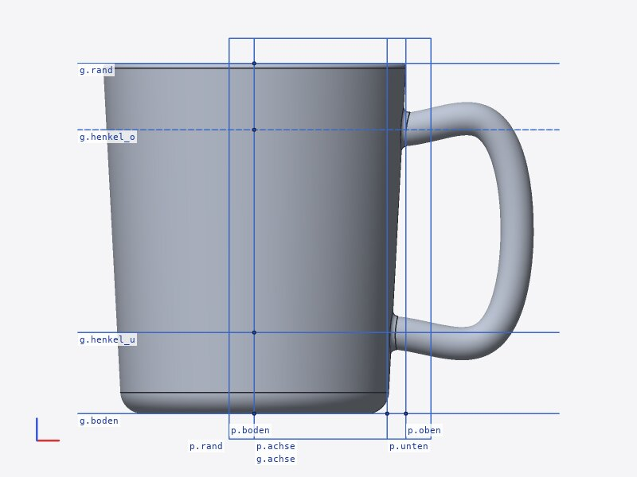
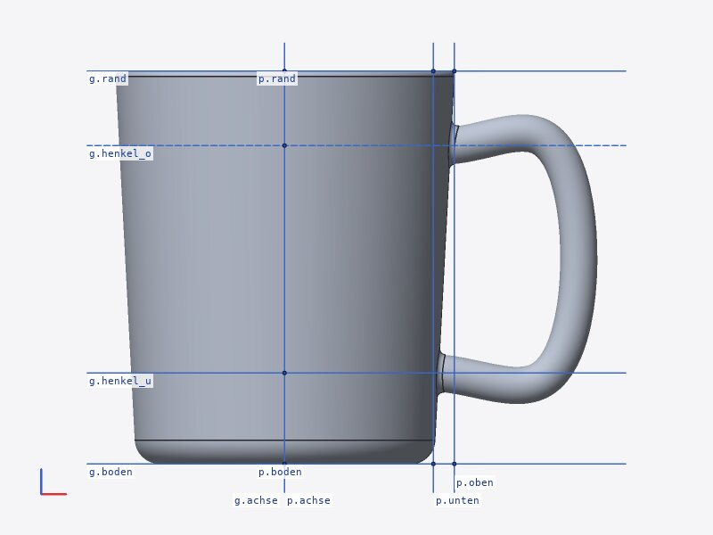
UI (nicht geändert, web/): Die 3D-Ansicht zeichnet Raster aus Scene.grids[].frame. Für dieselbe Korrektur bräuchte sie entweder die Regel oben (Bezüge aus Scene.refs → 2D-Knoten → op_info.kind == "rotate_extrude") oder besser einen Rahmen, den die Szene je Raster mitliefert (Grid.display_frame, in cad-session nach derselben Regel berechnet). Zum Ziehen/Einrasten an Rasterpunkten müssten die Griffe ebenso in die Profilebene abgebildet werden.
S3 – outline und Sichtbarkeit
cad outline führte Instanzen, die im Rumpf eines Moduls benannt werden (dom[0] … in pi_platte), unter „Benannte Instanzen“ der Datei und ihre Anker als Datei-Anker. Jetzt: eigener Abschnitt „Benannte Instanzen in Modulen (nur dort sichtbar)“ gruppiert nach Modul; im JSON scope: "file" | "module" und in_module; Anker nur der Datei-Instanzen. Dass measure --between dom[0].oben … im Dateikontext noch funktioniert, ist Sprachsemantik (cad-eval) und bleibt als Vorschlag: solche Namen nur über die Instanzkette (platte.dom[0].oben) oder mit Warnung auflösen.
S4 – Schnittkappen und Rasterbeschriftung
Ein Modell aus Bauteilen wurde im Schnitt als ein Netz der Wurzel gezeichnet: die Kappen berührender Bauteile verschmolzen. Jetzt wird es, sobald die Bauteile das ganze Modell ausmachen, je Bauteil gezeichnet: eigene Kappe mit wechselnder Schraffur und eigener Schnittkontur. Rasterbeschriftungen: Reihen indizierter Ebenen (rippe[0] … rippe[7]) erhalten eine Beschriftung g.rippe[0..7]; zwischen Beschriftungen bleiben 3 px (vorher konnten sie direkt aneinanderstoßen).
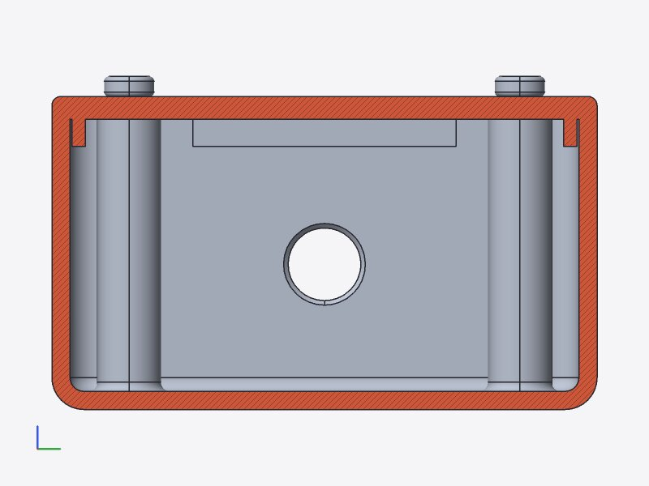
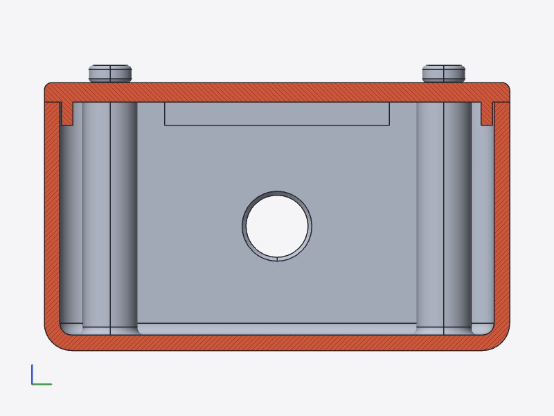
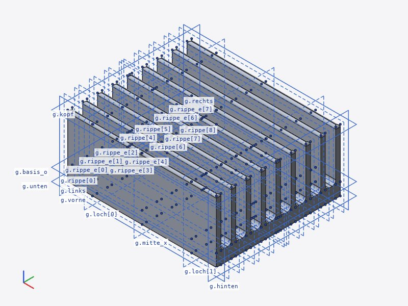
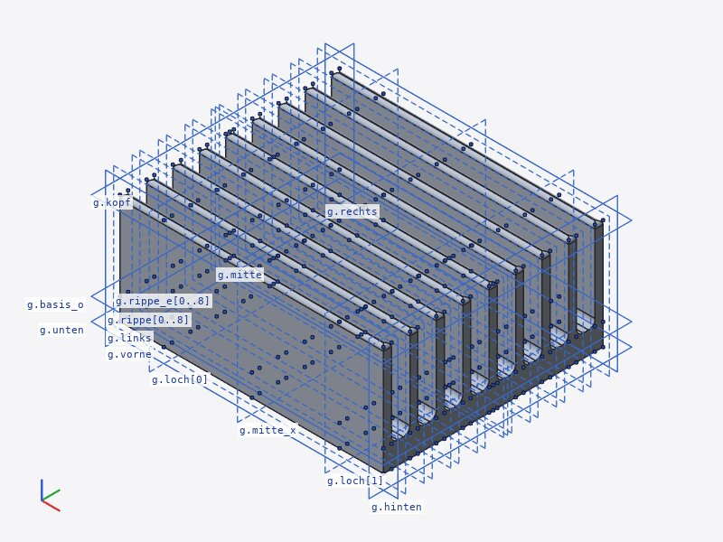
S2 – Ebenennamen als Werte, Anker-Listen (nur Bewertung)
- Ebenennamen als Werte (
g[i % 2 == 0 ? loch_l : loch_r, …]): Die Namen ing[…]sind heute Selektoren, keine Ausdrücke; die Umgehung über Zahlen (g.loch_l) verliert die Rasterbindung (Snap, Ziehen). Vorschlag: ein Wert-Typ „Ebene“ (g.loch_lergibt weiter die Zahl, aberplane(g.loch_l)bzw. ein Selektor-Ausdruckg[sel(i % 2 == 0 ? "loch_l" : "loch_r"), …]), deng[…]annimmt; so bleibt die Herkunft für Griffe erhalten. Aufwand mittel (cad-eval: Selektorauswertung, Drag-Rückschreiben nur für literale Selektoren). - Anker-Listen (
anchor loch[i] = …in einer Schleife): passt zur bestehenden Indizierung von Instanzen (k[i]) und Ebenen (rippe[i]). Vorschlag: gleiche Regel wie bei Ebenen (Name + Index, außenk.loch[2]), Snap-Ziele je Element. Aufwand gering bis mittel. - Rasterlokale Koordinaten für Profile in gedrehten Ebenen (S1): ein Raster mit eigenem Rahmen (
grid p in xz { … }) würde S1 auch in der Sprache lösen.
5 Laufzeit
Befund: Schlüsselbrett 4,0 s Kernel, aber ≈ 16 s je Auswertung. Messung: Stapelproben mit gdb (alle ~0,8 s) während cad check schluesselbrett.scad:
vorher (Volumen 1e-8): 17 Stichproben (gdb, etwa alle 0,8 s zuzüglich Anhaltezeit)
14 82 % Bauteilvolumina nach dem Kernel-Lauf (sc_mass_props → SmApiBrepComputeVolume)
3 18 % Kernel-Lauf (SMLib, Stapel gekürzt)
nachher (Volumen 1e-6): 7 Stichproben (gdb, etwa alle 0,8 s zuzüglich Anhaltezeit)
3 43 % Kernel-Lauf: sc_boolean
2 29 % Bauteilvolumina nach dem Kernel-Lauf (sc_mass_props → SmApiBrepComputeVolume)
1 14 % Kernel-Lauf: sc_sweep
1 14 % sonst (Sprache, Szene, Bild)
Ursache: Nach dem Kernel-Lauf berechnet die Sitzung das Volumen jedes Bauteils (Bauteilliste der Szene, part_volumes); sc_mass_props rief nach den Masseeigenschaften (1e-4) zusätzlich SmApiBrepComputeVolume(…, 1e-8). Die Genauigkeit 1e-8 kostet über adaptive Runge-Kutta-Integration je Fläche (SmFace::ComputePreciseProperties) bei den gesweepten Haken rund 11 s. Gemessener relativer Volumenfehler: 1e-6 → ≤ 4,4e-6, 1e-7 → ≤ 1,1e-7, 1e-8 → ≤ 1,5e-8 (Kugel, Torus, Kegel). Korrektur: 1e-6 (Bauteilvolumina werden mit 0,1 mm³ angezeigt; Prüfungen nutzen 0,1 %).
| cad render schluesselbrett.scad (Median von 3) | vorher | nachher |
|---|---|---|
| Auswertung (evaluate_ms, ohne Bild) | 16.669 ms | 6.123 ms |
| davon Kernel-Lauf (kernel_ms) | 4.371 ms | 4.153 ms |
| Bild (render_ms) | 996 ms | 839 ms |
Der Rest zwischen Kernel und Auswertung sind jetzt im Wesentlichen die Bauteilvolumina (1e-6) und Tessellierung/Szene. Weiter ginge es, die Volumina nur zu berechnen, wenn sie gebraucht werden (outline, measure, UI-Bauteilliste), oder sie aus den Masseeigenschaften (1e-4) zu nehmen.
6 Offen
- F2 (Zylinder ∪ gekrümmter Sweep), F3/F4 (Sweeps von Polygonprofilen), F6 (Ecktyp konvex/konkav), F11 (deckungsgleiche Zylinder), F12 (shell eines Lofts), F15 (Kehle Sweep/Kugel): SMLib-Fehler; Meldungen und Umgehungen wie oben.
- F10: die Kehle über zwei Flächen wird gemeldet, nicht gerechnet.
- F5, F8c, F9a haben kein richtiges Ergebnis (Kollision, tangentiale Berührung); ein automatisches „ein wenig überlappen“ wäre möglich, verändert aber die Geometrie ohne Auftrag.
- S1 in der UI (Vorschlag oben), S2 und die Sichtbarkeit von
dom[0].obenim Dateikontext (Sprachsemantik). - Die Prüfung der Verrundung stützt sich auf grobe Volumina (1e-2); Fehler, die das Volumen nur wenig ändern, bleiben unerkannt.
7 Testläufe
Neue Regressionstests
f09_examples_report_errors_instead_of_crashing ok, s1_profile_grid_of_rotate_extrude_is_drawn_in_the_profile_plane ok, s3_outline_lists_instances_named_in_modules_separately ok, s4_section_of_a_model_with_parts_draws_each_part ok, f01_symmetric_spline_profile_sweeps_along_a_curved_path ok, f03_open_polygon_sweep_names_the_cause ok, f01_off_centre_profile_follows_its_origin_on_a_curved_path ok, f07_translated_torus_selects_the_edge_on_its_core_circle ok, f02_failed_union_is_reported_once ok, f09_tangent_contact_under_union_fillet_fails_cleanly ok, f08_booleans_with_moved_tori_and_revolved_circles ok, f05_chamfer_that_leaves_an_open_shell_is_an_error ok, f13_shell_thicker_than_a_rounding_names_the_radius ok, f10_union_fillet_that_loses_the_shell_is_an_error ok, chamfer_result_must_be_closed ok, fillet_at_a_nearly_tangent_circle_fails_without_crash ok, moved_revolved_ring_unites ok, sweep_of_off_centre_and_spline_profiles_along_a_curve ok, tangent_torus_in_a_slab_is_an_error ok, volume_accuracy ok, difference_of_bodies_touching_along_an_edge_keeps_the_first ok, moved_rotated_and_scaled_tori_intersect ok
Kernel: crates/kernel-smlib/tests/alltag.rs; Engine: crates/cad-engine/tests/alltag_fehler.rs (liest die Minimalbeispiele); CLI: crates/cad-cli/tests/geometrie.rs.
Fehlerbeispiele (check.sh --fehler)
Fehlerbeispiele (tests/alltag/fehler): behoben f01_sweep_spline_profil.scad offen f02_union_zylinder_sweep.scad: Fehler – gemeldet: Vereinigung gescheitert: boolean union failed: SM_ERR_NULL_POINTER (1006) offen f03_sweep_polygon16.scad: Fehler – gemeldet: sweep gescheitert: sweep: SMLib left 3 seam(s) between the side faces of the polygon profile open (SMLib limit offen f04_union_fillet_sweep_polygon.scad: Fehler – gemeldet: Verrundung gescheitert (1 mm): fillet failed: SM_ERR (1001) behoben f05_fase_volumen_null.scad (Fehler wie gewollt: Fase gescheitert (0.8 mm): chamfer failed: SMLib returned a body that is not closed (faces missing): the blend) offen f06_fase_konkave_ecke.scad: Fehler – gemeldet: Fase gescheitert (0.5 mm): chamfer failed: SM_ERR (1001) behoben f07_torus_zone.scad behoben f08a_union_torus.scad behoben f08b_union_ring_verloren.scad behoben f08c_differenz_torus_tangential.scad (Fehler wie gewollt: Differenz gescheitert: the result is not a closed solid: the operands touch tangentially or along an edge ther) behoben f09a_absturz_tangentialer_dom.scad (Fehler wie gewollt: Vereinigung gescheitert: the result is not a closed solid: the operands touch tangentially or along an edge th) behoben f09b_absturz_zapfen_sweep.scad (Fehler wie gewollt: Verrundung gescheitert (1 mm): fillet failed: SMLib cannot blend the corner where these edges meet (faces that) offen f10_union_fillet_schale_verloren.scad: Fehler – gemeldet: Verrundung gescheitert (1 mm): fillet failed: SMLib returned a body that is not closed (faces missing): the bl offen f11_stift_deckungsgleich.scad: Fehler – gemeldet: Vereinigung gescheitert: boolean union failed: SM_ERR_NULL_POINTER (1006) offen f12_shell_loft_quadrat_kreis.scad: Fehler – gemeldet: shell gescheitert (2 mm): SmApiShellBrepFull failed: SM_ERR_NULL_POINTER (1006); kernel trace: SM_ERR_NULL_POI behoben f13_shell_verrundung.scad (Fehler wie gewollt: shell gescheitert (2 mm): shell: wall thickness 2.000000 is not smaller than the radius of a convex rounding o) offen f15_knauf_kehle.scad: Fehler – gemeldet: Verrundung gescheitert (1 mm): fillet failed: SM_ERR (1001)
Alltagsmodelle, OpenSCAD-Vergleich, STEP
19 Modelle, 0 mit Problemen, 112 s, Exporte in /tmp/alltag-9482ai1g (gelöscht) compare.py: 33/33 files match verify.py: 48/48 passed
cargo test, clippy, fmt, Wasm
cargo test --workspace: 426 passed, 0 failed clippy -D warnings: sauber fmt --check: sauber node test-node.mjs: all node tests passed